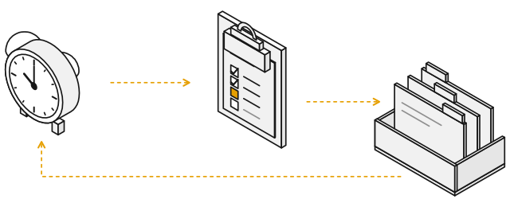
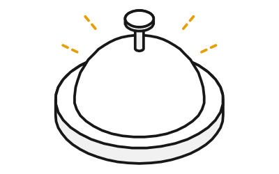

A login item runs the check every minute and again after each restart, so nothing has to stay open. Workers that a restart killed are seen as dead and resumed once.
一个登录项每分钟跑一次检查，重启后也会自动接着跑，什么都不用一直开着。被重启打断的干活会话会被认出来，并恢复一次。
autopilot drives a Jira epic, one big ticket or an idea to done. It plans the work, runs workers, reviews them, merges where you allow it, and keeps one page of what needs you.
autopilot 把一个 Jira 史诗、一张大工单或者一个想法一路推到完成。它自己做计划、派会话干活、做审查，在你允许的地方合并，还维护一个网页，上面放的都是需要你的事。
It is a fresh-session loop: every step is a new, empty Claude session that reads its memory from files.
它是一个新会话循环：每一步都是一个全新的、空白的 Claude 会话，从文件里读记忆。
Say you want Claude to keep working on a project for days while you do other things. The obvious way is to leave one Claude session running and prompt it on a timer. That is a single-session loop.
The longer it runs, the more it forgets what you told it, even with memory files. The conversation keeps growing, so Claude Code compacts it again and again: it squeezes the older part into a summary and keeps going. In a long chat your rules are a few lines against a huge conversation, and memory only reminds; nothing makes the next step follow it. The timer lives inside the session too: close it, or restart the computer, and every scheduled job is gone.
autopilot is a fresh-session loop. Every step is a pass: a brand-new, empty session that reads its memory from files, does the step, writes down where things stand, and exits. Your rules are read at the start of every pass, while the context is still small, so they arrive at full strength every time. The rules that matter most are not left to memory at all: code and permissions enforce them, and a pass can change neither.
The price is that no session sits there waiting for you. When you have questions, you open one.
假设你想让 Claude 连续好几天推进一个项目，而你去忙别的。最直接的做法是开着一个 Claude 会话，按时给它发提示词。这就是单会话循环。
它跑得越久，就越会忘掉你跟它说过的话，有记忆文件也一样。对话一直在变长，Claude Code 只好一次又一次地压缩它：把前面的部分挤成一段摘要，然后接着跑。在长对话里，你的规则只是几行字，对面是一整个巨大的对话；记忆也只能提醒，没有东西逼着下一步照做。而且定时器住在会话里面：把会话关掉，或者重启电脑，所有定时任务就都没了。
autopilot 是一个新会话循环。每一步都是一轮：开一个全新的空白会话，从文件里读记忆，做完这一步，写下现在的进展，然后退出。你的规则在每一轮一开始就读进来，那时上下文还很小，所以每次都以完整的样子出现。最要紧的规则根本不靠记忆：由代码和权限来执行，每一轮都改不了。
代价是没有一个会话一直守着等你。有问题时，你自己开一个。
It is also cheap when nothing happens: the minute check uses no tokens, and Claude starts only when something changed, or every 30 minutes. 没事的时候也很省：每分钟的检查不花令牌，只有出现变化，或者满 30 分钟，才启动 Claude。
Four parts turn the loop. Only the pass and the workers are Claude sessions, and each starts empty: everything it needs is in files it reads at the start. 转动这个循环的有四个部分。只有「一轮」和「干活的会话」是 Claude 会话，而且每个都从空白开始：它需要知道的一切，都在开局要读的文件里。

ap gate. It is plain code and uses no tokens. It builds a fingerprint of everything that could need Claude: finished work, workers that died, ready tasks and free worker slots, CI and reviews on open PRs, and any watch commands you set up.
检查。每分钟一次，重启后也照常，一个登录项（launchd，macOS 管后台任务的系统服务）运行 ap gate。这是普通代码，不花令牌。它算出一个指纹：把所有可能需要 Claude 的东西压成一段简短的摘要，比如做完的活、意外退出的会话、准备好的任务和空闲的位置、合并请求的测试和审查状态，以及你设置的监视命令。
| File文件 | What it holds装的是什么 | Who changes it谁能改 |
|---|---|---|
RUNBOOK.md |
How a pass works, step by step一轮怎么走，一步一步写清楚 | Only a code change只有改代码才能改 |
RULES.md |
Your standing rules, for every autopilot or for one. One autopilot's own rule wins over a global one it conflicts with.你的长期规则，管所有 autopilot 或者其中一个。某个 autopilot 自己的规则和全局规则冲突时，以它自己的为准。 | Only you, in a session you open, after you say yes to the exact line. Passes and workers are denied.只有你，在你自己开的会话里，对那一行字点头之后才写。每一轮和干活的会话都被禁止修改。 |
state.json |
Where things stand: tasks, workers, open decisions. A fixed format that code checks.现在进展到哪：任务、干活的会话、待回答的问题。格式固定，由代码校验。 | Passes, only through ap commands每一轮，只能通过 ap 命令 |
events.jsonl |
Everything that happened, only ever added to发生过的每件事，只往里加，从不修改 | ap commands append to itap 命令往里追加 |
runs/<task>/ |
Each worker's hand-back, review, PR loop result and evidence每个干活会话的交接报告、审查结果、合并请求循环的结果和证据 | The workers干活的会话 |
| The page网页 | One row per thing the page shows, plus your answers网页上每样东西一行，外加你的回答 | Passes publish only changed rows; only the page's owner can answer每一轮只发布有变化的行；只有网页的主人能回答 |
Your data lives in ~/.claude/autopilot-data/, apart from the plugin's code: the global rules and settings at the top, each autopilot's own files in projects/<name>/. Every pass and worker also loads the repo's own instructions, skills and your memory for that repo, as any Claude Code session there does.
你的数据放在 ~/.claude/autopilot-data/，和插件的代码分开：最上层是全局的规则和设置，每个 autopilot 自己的文件在 projects/<name>/。每一轮和每个干活的会话，也会像那个仓库里的任何 Claude Code 会话一样，加载仓库自带的说明、技能，以及你在这个仓库的记忆。
A login item runs the check every minute and again after each restart, so nothing has to stay open. Workers that a restart killed are seen as dead and resumed once.
一个登录项每分钟跑一次检查，重启后也会自动接着跑，什么都不用一直开着。被重启打断的干活会话会被认出来，并恢复一次。
Each task runs in its own git worktree, under ~/worktrees by default: tests first, then a cold review, then a PR loop until CI is green and no reviewer finds anything. At most 5 workers run at once, shared in turn across all your autopilots.
每个任务都在自己的 git 工作区里做，默认放在 ~/worktrees 下：先写测试，再冷审查，然后反复处理合并请求，直到自动测试全部通过、审查者再也挑不出问题。同时最多跑 5 个干活的会话，所有 autopilot 轮流分配位置。
A page on claude.ai puts the cards that wait on you first, each in plain words, with its links and big answer buttons. Decisions it can undo, it makes itself: the few worth a look sit on top with OK and Undo, the routine rest fold into one line, and each task's evidence page lists its own. Your answer takes effect within a minute by day and within 30 minutes at night.
claude.ai 上的一个网页，把等你处理的卡片放在最前面，每张都用大白话写清楚，带着相关链接和大大的回答按钮。能撤销的决定它自己做：少数值得你看一眼的放在上面，带“OK”和“撤销”按钮；其余的日常决定折叠成一行；每个任务的证据页也列出它自己的决定。你的回答白天 1 分钟内生效，夜里 30 分钟内生效。
Its own sessions are blocked from editing your rules, its runbook, its settings and its state, and from posting comments, creating tickets or requesting reviewers. A chat message, a ticket or a comment goes out only after you say yes to that exact item on a card.
它自己的会话被禁止修改你的规则、它的说明书、设置和状态，也被禁止发评论、建工单和请人审查。一条聊天消息、一张工单或者一条评论，只有你在卡片上对那一件事点了头，才会发出去。
If you allowed merging at setup, it merges only after the PR loop is clean and a merge check passes: any required approval is on the latest commit, no human review thread is left unhandled, and CI is green on current main. What only a person can pass waits on your page.
如果你在设置时允许合并，它只会在合并请求的循环处理干净、并且合并检查通过之后才合并：需要的批准落在最新的提交上，没有没处理的人工审查意见，并且在最新的主分支上自动测试全部通过。只有人能放行的那一步，会在你的网页上等着。
It starts no new work once a usage window reaches 85%, or extra credits reach 90% of the monthly limit, and lets running work finish. Work starts again 5 minutes after the window resets. Usage numbers older than an hour allow one new worker at a time.
只要任何一个用量窗口到了 85%，或者额外额度用到月度上限的 90%，它就不再开新活，正在跑的照常做完。窗口重置 5 分钟后再继续。用量数据超过一个小时没更新时，一次只开一个新的干活会话。

Nobody is on call, so you ring: in any Claude Code session, type /autopilot and the autopilot's name. A hook (a script Claude Code runs on every message you send) adds a fresh snapshot to each message: tasks, running workers, what waits on you, the usage budget, and what changed since your last message. Ask for changes in plain words, such as “pause for today” or “skip that task”; they go through the same commands every pass uses. Close the session when you are done. The loop keeps going.
没有人值班，所以你自己摇铃：在任何一个 Claude Code 会话里，输入 /autopilot 加上它的名字。钩子（Claude Code 在你每次发消息时自动运行的脚本）会给每条消息加上最新快照：任务、正在跑的会话、等你处理的事、用量预算，以及你上一条消息之后发生了什么。用大白话提改动，比如「今天先暂停」或者「跳过那个任务」，改动走的是每一轮都在用的命令。用完就关掉会话，循环照常运行。
Also: reports at 09:00, 17:00 and 21:00 with a desktop notification; tasks from a Jira epic, one Jira ticket, an idea, or a source you describe at setup; the page and reports in your language next to English; and a check that the plugin itself names nobody. 还有：每天 09:00、17:00、21:00 写汇报并弹出桌面通知；任务可以来自一个 Jira 史诗、一张 Jira 工单、一个想法，或者设置时你自己描述的来源；网页和汇报用你的语言，同时附上英文；另有一项检查，确保插件本身不提到任何人。
Everything starts with /autopilot. The first word decides what happens; anything else is a conversation with an autopilot.
一切都从 /autopilot 开始。第一个词决定做什么；其他任何内容，都是在和某个 autopilot 对话。
/autopilot init |
Set up an autopilot. One multiple-choice question at a time, each with a default; it reads the whole setup back and writes files only after your yes.设置一个 autopilot。一次只问一个选择题，每题都有默认答案；最后把整套设置念给你听，你点头之后才写文件。 |
/autopilot <name> |
Bind this session to that autopilot and talk: ask anything, answer its cards, change things in plain words.把这个会话绑定到那个 autopilot，然后对话：随便问，回答它的卡片，用大白话改东西。 |
/autopilot |
With no name, it asks which autopilot first, or says which one it uses when there is only one.不带名字时，先问你用哪一个；只有一个时，直接告诉你用的是它。 |
/autopilot status |
One line per autopilot (running, waiting on you, done), plus the usage budget.每个 autopilot 一行（在跑几个、等你几件、完成多少），再加一行用量预算。 |
/autopilot doctor |
A health check: the login item, logins, settings files, MCP servers, disk space and more. Each failure comes with the line that fixes it.健康检查：登录项、各处登录、设置文件、MCP 服务器、磁盘空间等等。每一项失败都附上修好它的那一行命令。 |
/autopilot config |
List the settings, the changed ones first, and change one on your word.列出所有设置，改过的排在前面；你说改哪个，它才改哪个。 |
/autopilot tick [name] |
Queue a pass now. The check starts it within seconds.马上排一轮。检查会在几秒内启动它。 |
/autopilot pause <name>/autopilot resume <name> |
Pause an autopilot, or let it run again.暂停一个 autopilot，或者让它继续跑。 |
/autopilot stop <name> |
Asks first, then ends its workers and marks it stopped.先问你，然后结束它所有干活的会话，并把它标成已停止。 |
/autopilot off |
Unbind this session.解除这个会话的绑定。 |
/autopilot uninstall |
Asks first, then removes the login item.先问你，然后删掉登录项。 |
Plain words work too: “pause checkout” or “run checkout now”, in any language, mean the same as the command. To talk to one worker directly, attach to its background session with claude attach and the session's name.
大白话也行：「暂停 checkout」或者「现在跑一下 checkout」，用什么语言说都一样。想直接和某一个干活的会话说话，就用 claude attach 加上会话名字，连上它的后台会话。
Claude Code loads a plugin it finds in ~/.claude/skills/<name>/ in every new session, so /autopilot works everywhere with no extra flags.
Claude Code 会在每个新会话里，自动加载 ~/.claude/skills/<name>/ 下的插件，所以在哪里都能直接用 /autopilot，不用加任何参数。
git clone https://github.com/agate/autopilot.git ~/.claude/skills/autopilotStart a new Claude Code session and run /autopilot init. It reads the source first (the Jira epic or ticket, the repo) and offers what it found as each default. On the first setup it also publishes your page, and asks before it installs the login item.
开一个新的 Claude Code 会话，运行 /autopilot init。它会先读任务来源（Jira 史诗或工单、代码仓库），把读到的东西当作每道题的默认答案。第一次设置时，它还会发布你的网页，并在装登录项之前先问你。
/autopilot initEach failure comes with the line that fixes it. If the login item is not installed yet, it offers to install it again.
每一项失败都附上修好它的那一行命令。如果登录项还没装，它会再问你一次要不要装。
/autopilot doctorRequires macOS (the check is a launchd login item); Claude Code, signed in, with claude.ai for the page; the GitHub CLI, signed in; git and python3. Jira sources also need Jira tools (an MCP server) in Claude Code. The Xcode command line tools are recommended: without a C compiler, the login item cannot start when the plugin sits in a cloud-synced folder. 需要 macOS（检查靠 launchd 登录项来跑）；已登录的 Claude Code，并能用 claude.ai 来放网页；已登录的 GitHub 命令行工具；git 和 python3。用 Jira 当任务来源时，Claude Code 里还要有 Jira 工具（一个 MCP 服务器）。建议装上 Xcode 命令行工具：没有 C 编译器的话，插件放在云同步文件夹里时，登录项启动不了。
To remove it: /autopilot uninstall removes the login item; then delete ~/.claude/skills/autopilot. Your data stays in ~/.claude/autopilot-data/ until you delete it.
卸载：先运行 /autopilot uninstall 删掉登录项，再删除 ~/.claude/skills/autopilot。你的数据留在 ~/.claude/autopilot-data/，直到你自己删掉。